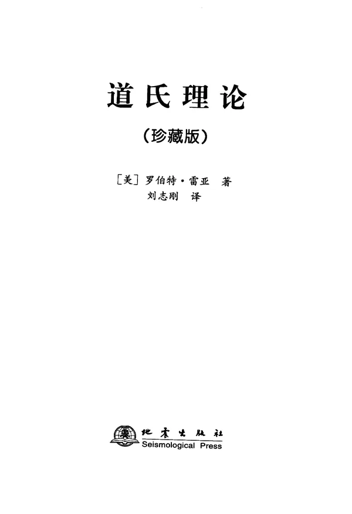

VISUAL PREVIEW / C — SWISS MODERN
交易书库
不收藏读不完的 PDF。把每一本书拆成原则、规则、失效条件，再放回真实交易里检验。
THE COLLECTION / 04
四本书，四种看市场的方式。
暖白 + 粗体网格 + 朱红 / 钴蓝
海龟
交易法则THE TURTLE RULES
交易法则THE TURTLE RULES
股票大作手
回忆录REMINISCENCES
回忆录REMINISCENCES
金融
炼金术THE ALCHEMY OF FINANCE
炼金术THE ALCHEMY OF FINANCE
MENTOR V0 / CHECKLIST
先做一个不会替你下单的导师。
它不预测涨跌，只把书里的原则找出来，把互相冲突的地方摆出来，把交易前的检查清单递给你。
打开导师 →